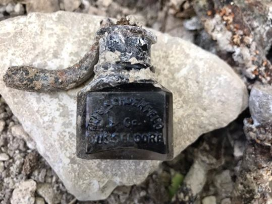

Elena SYDOROVA : Depuis plusieurs années vous réalisez des fouilles archéologiques à AGUILCOURT dans la Marne afin de mieux connaître le destin des soldats du Corps expéditionnaire russe combattant durant la Première Guerre mondiale. Il y a désormais quelques mois des chercheurs de La « Société militaire et historique russe » vous ont rejoint. Pouvez-vous nous parler de cette équipe, s’il vous plaît ?
Pierre MALINOWSKI : Une équipe incroyable, motivée et sympathique, est venue de Smolensk et d’Ekaterinbourg. L’équipe est restée 10 jours à creuser du matin 7h00 au coucher du soleil, sous le soleil comme sous la pluie. On avait envie que ça ne s'arrête jamais. Cette expédition restera comme une expérience humaine exceptionnelle.
E.S. : Autant que je sache, votre équipe n’était pas composée essentiellement que d’historiens. Ainsi, parmi eux, Il y avait une étudiante en psychologie de l’Université de médecine. Quels étaient les objectifs de leurs recherches ?
P.M. : L'objectif était, après ma rencontre avec le Président Poutine à Paris en mai dernier, d'organiser un projet culturel entre nos deux pays.
J'ai ensuite discuter avec le Ministre de la culture, Monsieur Medinski et j'ai été contacté par la Société Historique Militaire afin d'organiser cette expédition avec eux. Il a été décidé d'envoyer 8 jeunes Russes en France pour retrouver des vestiges Russes de la 1er Guerre Mondiale. Et le succès fut important.
E.S. : Vous avez trouvé beaucoup d’objets de la vie quotidienne des militaires : des casques, des couteaux, des armes, des outils de tranchées, des bouteilles, des cuillères etc. De quoi peuvent témoigner ces trouvailles ?
P.M. : À travers ces centaines d'objets, nous apprenons comment vivaient ces hommes au fond des tranchées durant quatre années terribles. Ils mangeaient, dormaient et mourraient dans ces milliers de kilomètres de tranchées. C'est émouvant surtout lorsque vous retrouvé des objets personnels comme des pierres sculptés ou des pendentifs.
E.S. : Quelle est l’histoire prévisible de ce briquet ou de cette enveloppe de cigarette « Sébastopol » ?
P.M. : Je ne parviens pas à savoir l'origine de ces femmes en coiffure sur le briquet, peut-être quelqu'un est spécialiste des chapeaux du XIXème siècle et saura nous éclairer. Mais c’est un briquet magnifique probablement emporté par un soldat qui le gardait comme objet précieux et il reposait là depuis 100 ans. En ce qui concerne la boîte à cigarettes, c'est surtout le côté symbolique car ce sont des étudiants russes qui la découvrent un matin dans un trou d'obus et on y voit le nom de Sébastopol. Bien entendu, cela se rapporte à la rue de Sébastopol à Paris mais il y avait combien de chances de trouver cela durant ces dix jours?
E.S. : Et ce bouton avec la marque de fabrique « Nicolaï Semenov », mérite-il une attention particulière ?
P.M. : Oui car c'est grâce à lui que nous avons pu connaitre la nationalité du soldat. En effet, après avoir dégagé le crâne, nous avons délicatement dégagé la craie qui recouvrait le haut du corps au pinceau et nous vîmes ce bouton sur le col du soldat. Pas de doute, c'était un russe tué et disparu le 19 avril 1917.
E.S. : Pourquoi des soldats avaient ce type de boutons ?
P.M. : Ce bouton n'était pas réglementaire et venait d'une fabrique indépendante. En gros, c'était un équipement personnel. Par contre, celui-ci est réglementaire. L'aigle Bicéphale avec les emblèmes du Tsar et gravé en cyrillique. Et ce sont de magnifiques boutons.
E.S. : Une autre trouvaille spectaculaire, ce sont les lettres en arabes, trouvées dans une petite boîte, appartenant à un soldat du 2ème ou 3ème Tirailleurs qui furent décimés entre le 16 et 19 avril 1917 au Mont-Spin. À votre avis, pourquoi ce soldat avait ces lettres sur lui ?
P.M. : Oui cela est incroyable car cela nous montre combien de nationalités différentes ont été massacrés lors de la boucherie du 16 avril 1917.
Retrouver ces lettres dans une petite boîte en métal, en assez bon état est simplement unique. Et qu'en plus, elles soient en Arabes, cela devrait servir de leçon aux personnes qui déclarent que très peu d'Africains sont morts durant la Grande Guerre.
C'est faux, il n'y a pas eu que des Tirailleurs Sénégalais mais aussi de milliers d'Algériens, de Marocains, venus de loin pour mourir ici.
E.S. : Est-ce qu’il y d’autres documents exceptionnels que vous voudriez présenter ?
P.M. : Sur ces photos, ce sont des objets Allemands comme ces verres sculptés. Leurs matériels personnels étaient beaucoup plus jolis que le nôtre.
E.S. : Tout cela, pas à pas, vous a abouti vers une grande découverte historique : les dépouilles d’un soldat russe tué le 19 avril 1917. Comment peut-on décrire cette personne et son destin ? Est-ce que ses dépouilles ont été inhumées ?
P.M. : Oui c'est un moment Historique. J'avais passé 3 ans à retrouver un premier corps et là, d'avoir l'honneur d'en retrouver un et complet, c'est un moment qui restera à jamais gravé dans ma mémoire; Il reposait sous 30 cm de terre. 30 cm !!!! Depuis 100 ans. Avec son casque, ses boutons, une botte... Il fut tué et disparu le 19 avril 1917 vers 15h30. Il devait appartenir au 5 Régiment Spécial Russe de la 3ème Brigade. D'après les études anthropologiques, il avait entre 18 et 25 ans. Son corps sera officiellement à la disposition de la Russie le 6 novembre.
E.S. : Communiquez-vous avec les descendants des militaires du Corps expéditionnaire russe qui demeurent en France ou en Russie ?
P.M. : De plus en plus. Surtout de Russie où des familles me contactent.
E.S. : Est-ce qu’Il y a beaucoup d’informations concernant le Corps expéditionnaire russe ? Avec quelles sources et quelles archives historiques travaillez-vous ?
P.M. : Grace aux archives de mon père. Il a des documents exceptionnels qui m'ont permis de situer les tranchées de la bataille. Mais j'ai dû replacer les anciennes cartes avec le terrain d'aujourd'hui et cela fut compliqué. Et j'ai beaucoup de rapport qui détaille l'attaque minutes par minutes.
E.S. : Avez-vous un projet d’un monument en l'hommage des 2400 tués et 700 disparus de la 3ème brigade au Mont-Spin ?
P.M. : Oui, la Société Militaire va offrir ce monument, je m'occupe des financements pour la construction et l'aménagement. Cela aura lieu en 2018 avec une chance d'avoir les deux Présidents Français et Russes.
E.S. : Qu’avez-vous découvert dans le tunnel allemand de la Grande Guerre ? Où se trouve-t-il ? Que représente cette galerie souterraine ?
P.M. : Ce Tunnel se trouve dans l'Aisne sur le Chemin des Dames. Nous l'avons ouvert il y a quelques années avec des amis. Il n'avait pas été visité depuis 1918 et il restait beaucoup de matériels à l'intérieur. Lorsque vous êtes à l'intérieur, sous 20 mètres et que vous parcourrez 400 mètres de galeries, vous vous mettez à la place de ces hommes qui restèrent terrés pour échapper au bombardement.
C'est impressionnant.
E.S. : Qui aurait pu posséder cet encrier que vous avez trouvé ?
P.M. : Cet encrier est unique. Pourquoi ? Car il ne s'achetait que dans une petite fabrique à Düsseldorf et cette encre était utilisée et commandée par Van Gogh. Et je retrouve cela dans une « poubelle » Allemande 100 ans plus tard !
E.S. : Vous avez participé au Forum des citoyens actifs de la « Communauté » à Moscou. Quels sont les objectifs et l’intérêt de cet événement ?
P.M. : Malheureusement je n'ai participé que pour l'entrevue avec le Président.
E.S. : Quels sujets vous avez discuté avec M. Poutine à ce Forum ?
P.M. : De l'importance de l'amitié Franco-Russe. Nous avons tant en commun. Et de le voir venir inaugurer le monument en 2018. Ces 15 minutes furent très intéressantes. Il est toujours très sympathique avec moi.
E.S. : À votre avis, quelles démarches sont nécessaires pour prévenir la guerre en Europe ?
P.M. : Il est impensable de se dire qu'une guerre se déroule actuellement en Europe. Dans le Donbass. Et cela n'a pas l'air de trop mobiliser les politiques; Donc je pense que vous pouvez prendre toutes les démarches du monde, les guerres seront toujours possibles partout dans le monde surtout lorsqu’elles sont déclarées par de grandes puissantes pour leurs intérêts.

Partager cette page